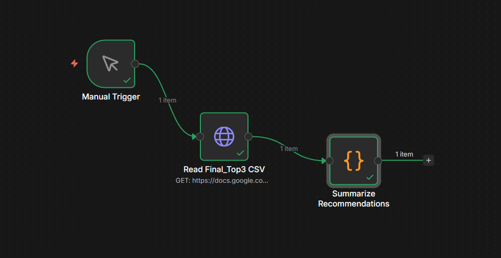
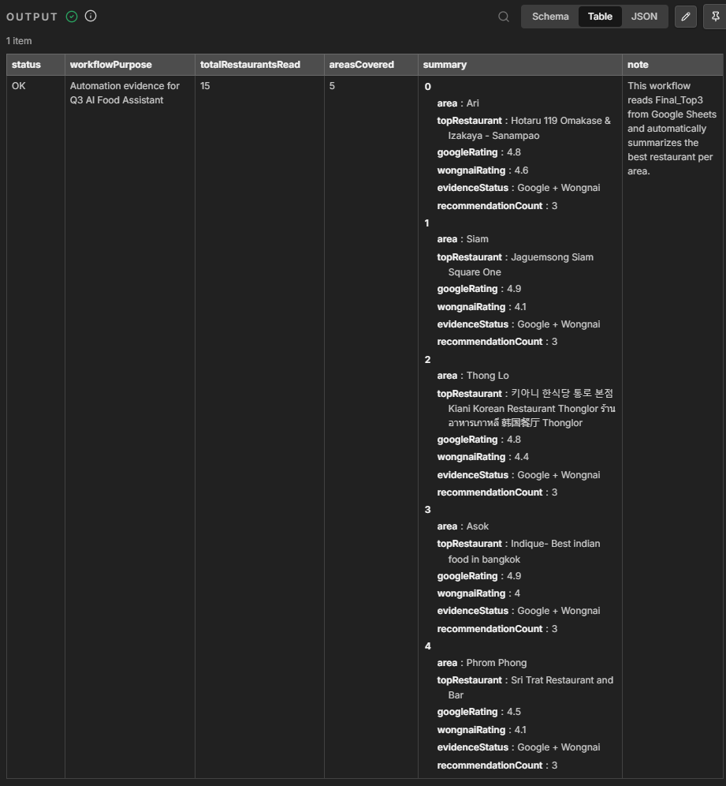

Best pick88.6
Hotaru 119 Omakase & Izakaya
Google 4.8 จาก 2,578 รีวิว และ Wongnai 4.6 เหมาะเป็นตัวเลือกคุณภาพสูงของ Ari โดยเฉพาะเมื่ออยากได้ประสบการณ์ญี่ปุ่นที่เด่นกว่า casual dining ทั่วไป
Trade-off: ควรตรวจราคาและจองล่วงหน้าสำหรับทีม 8-12 คน
AI Workflow Examination - Restaurant Recommendation
รายงานนี้ใช้ข้อมูลจริงจาก Google Maps ผ่าน Apify, ตรวจซ้ำด้วย Wongnai, จัดคะแนน 100 คะแนน และใช้ n8n ทำ automation เพื่อสรุปร้านแนะนำต่อย่านแบบตรวจย้อนกลับได้
โจทย์คือสร้าง workflow ที่ช่วยทีม 8-12 คนเลือกร้านอาหารในย่านที่กำหนด โดยไม่ตอบจากความรู้สึกอย่างเดียว แต่ใช้ข้อมูลจริง รีวิวจริง คะแนนจริง และหลักฐานที่เปิดตรวจได้
ใช้ Apify Google Maps Scraper เก็บข้อมูลร้านอาหาร 5 ย่าน รวม 200 แถว
นำข้อมูลเข้า Google Sheets แยก raw, clean, Top25 และ Final Top3
แยกย่าน, จัดประเภท, คัด 25 ร้านต่อย่าน และตรวจร้านที่ต้อง review
ให้คะแนน 100 คะแนนตาม model ที่กำหนด และใช้ Wongnai เป็น source ที่ 2
ใช้ n8n อ่าน Final_Top3 จาก Google Sheets แล้วสรุป Top restaurant ต่อพื้นที่
Source 1: Google Maps data from Apify export. ใช้ข้อมูลชื่อร้าน, rating, review count, category, address และ Google Maps URL
Source 2: Wongnai URLs and ratings for the 15 recommended restaurants. ใช้ยืนยันคุณภาพจากอีกแหล่งหนึ่งและเพิ่ม evidence links
Workbook: Q3 AI Food Assistant Submission Workbook
| Criteria | Weight | ใช้ดูจากข้อมูลอะไร |
|---|---|---|
| Rating & Review Quality | 25 | Google rating, review count และ Wongnai rating |
| Group Suitability | 20 | จำนวนรีวิว, category, website/phone และความน่าเหมาะกับทีม 8-12 คน |
| Price Suitability | 15 | ใช้คะแนนกลางจากข้อจำกัด data และใส่ caution ให้ตรวจราคาก่อนจอง |
| Travel Convenience | 15 | ร้านอยู่ในย่านเป้าหมายและเดินทางสะดวกจาก BTS/ย่านหลัก |
| Data Completeness | 15 | ชื่อร้าน, rating, review count, category, address, URL, website/phone |
| Uniqueness / Experience | 10 | ประเภทอาหาร จุดเด่นร้าน และความต่างของประสบการณ์ |
กดเปิดตารางนี้เมื่ออยากดู ranking รวมทั้ง 5 ย่านแบบละเอียด ส่วนหน้าแรกจะได้ไม่แน่นเกินไป
| # | Restaurant | Area | Food Type | Reviews | Score | Evidence | |
|---|---|---|---|---|---|---|---|
| 1 | Indique - Best Indian Food in Bangkok | Asok | Indian restaurant | 4.9 | 4,063 | 89.5 | Google Maps |
| 2 | Jaguemsong Siam Square One | Siam | Korean restaurant | 4.9 | 3,473 | 89.3 | Google Maps |
| 3 | Gigi Eatery Asoke | Asok | Italian restaurant | 4.8 | 3,385 | 88.9 | Google Maps |
| 4 | BARTELS Asok | Asok | Brunch restaurant | 4.8 | 2,456 | 88.6 | Google Maps |
| 5 | Hotaru 119 Omakase & Izakaya - Sanampao | Ari | Japanese restaurant | 4.8 | 2,578 | 88.6 | Google Maps |
| 6 | Savoey @Terminal 21 Asok | Asok | Seafood restaurant | 4.6 | 3,626 | 88.4 | Google Maps |
| 7 | Brooks brunch & bar Ari | Ari | Restaurant | 4.8 | 1,771 | 88.2 | Google Maps |
| 8 | Kiani Korean Restaurant Thonglor | Thong Lo | Korean restaurant | 4.8 | 1,266 | 87.8 | Google Maps |
| 9 | Peppina Sukhumvit Flagship Branch | Phrom Phong | Italian restaurant | 4.5 | 2,494 | 87.7 | Google Maps |
| 10 | Mozza By Cocotte Siam Paragon | Siam | Italian restaurant | 4.7 | 1,476 | 87.7 | Google Maps |
เลือกย่านจากปุ่มด้านล่าง แล้วดู Top 3 ของย่านนั้นแยกกัน จะอ่านง่ายกว่าการวางทั้ง 15 ร้านต่อกันในหน้าเดียว
Google 4.8 จาก 2,578 รีวิว และ Wongnai 4.6 เหมาะเป็นตัวเลือกคุณภาพสูงของ Ari โดยเฉพาะเมื่ออยากได้ประสบการณ์ญี่ปุ่นที่เด่นกว่า casual dining ทั่วไป
Trade-off: ควรตรวจราคาและจองล่วงหน้าสำหรับทีม 8-12 คน
Google 4.8 จาก 1,771 รีวิว เหมาะกับบรรยากาศกินง่ายและเป็นมิตรกับกลุ่มมากกว่า fine dining
Trade-off: Wongnai 3.9 ต่ำกว่า Google เล็กน้อย จึงควรตรวจรีวิวล่าสุด
Google 4.8 จาก 3,432 รีวิว และ Wongnai 4.0 เหมาะเป็นตัวเลือกประสบการณ์อาหารจีน/ติ่มซำสำหรับกลุ่ม
Trade-off: ต้องตรวจความพร้อมโต๊ะใหญ่และช่วงเวลารอคิว
Google 4.9 จาก 3,473 รีวิว และ Wongnai 4.1 เป็นตัวเลือกแข็งแรงที่สุดของ Siam จากทั้งคะแนนและจำนวนรีวิว
Trade-off: ร้านในโซนห้าง/สยามอาจมีช่วงคนเยอะ ควรจองหรือเช็กคิวก่อน
Italian restaurant ใน Siam Paragon เดินทางง่าย เหมาะกับทีมที่อยากได้ร้านนั่งคุยและเมนูหลากหลาย
Trade-off: Wongnai 3.9 จึงควรเช็กรีวิวล่าสุดและราคาเฉลี่ยต่อหัว
Google 4.9 จาก 4,786 รีวิว เป็นตัวเลือกยอดนิยมมาก เหมาะกับกลุ่มที่ต้องการร้านเข้าถึงง่ายใน Siam Center
Trade-off: Wongnai 3.7 สะท้อนว่าประสบการณ์อาจไม่สม่ำเสมอ ควรดูรีวิวล่าสุด
Google 4.8 และ Wongnai 4.4 เป็นร้านเกาหลีที่คะแนนสองแหล่งสอดคล้องกัน เหมาะกับทีมที่ต้องการอาหารแชร์กันได้
Trade-off: ควรตรวจเวลาเปิดและความพร้อมโต๊ะกลุ่ม
Japanese restaurant ที่ได้ Google 4.8 และ Wongnai 4.3 เหมาะกับทีมที่อยากได้ตัวเลือกญี่ปุ่นคุณภาพสูง
Trade-off: ควรเช็กราคาและจำนวนที่นั่งสำหรับกลุ่มก่อนใช้งานจริง
Brunch restaurant ที่มี Google 4.7 จาก 1,012 รีวิว และมี Wongnai URL เป็นหลักฐานเสริม เหมาะกับทีมที่อยากได้บรรยากาศ casual
Trade-off: Wongnai ไม่มีคะแนนใน export นี้ จึงต้องตรวจรีวิวล่าสุดเพิ่มเติม
Google 4.9 จาก 4,063 รีวิว และ Wongnai 4.0 ทำให้เป็นตัวเลือกอันดับหนึ่งของ Asok ด้วยคะแนนและจำนวนรีวิวที่แข็งแรงมาก
Trade-off: เป็นอาหารอินเดีย ควรเช็ก preference ของทีมก่อนเลือก
Google 4.8 จาก 3,385 รีวิว เหมาะกับทีมที่ต้องการ Italian dining ในย่าน Asok ที่เดินทางสะดวก
Trade-off: Wongnai 3.8 ต่ำกว่า Google จึงควรดูรีวิวล่าสุดและราคา
Google 4.8 และ Wongnai 4.7 เป็นตัวเลือกที่คะแนนสองแหล่งสูง เหมาะกับกลุ่มที่ต้องการบรรยากาศ casual/brunch
Trade-off: อาจเหมาะกับมื้อกลางวันหรือ early dinner มากกว่ามื้อเย็นทางการ
Thai restaurant ที่ได้ Google 4.5 จาก 2,551 รีวิว และ Wongnai 4.1 เหมาะกับทีมที่อยากได้อาหารไทยคุณภาพสูงในย่านพร้อมพงษ์
Trade-off: ควรเช็กราคาและการจองโต๊ะกลุ่มล่วงหน้า
Italian restaurant ที่มี Google 4.5 จาก 2,494 รีวิว เหมาะเป็นตัวเลือกที่เข้าใจง่ายสำหรับทีมหลายคน
Trade-off: Wongnai 3.9 จึงควรตรวจราคาและรีวิวล่าสุด
ตัวเลือก Italian ใน EmQuartier ที่เดินทางสะดวก เหมาะกับทีมที่ต้องการร้านในห้างและบรรยากาศคุยงานได้
Trade-off: คะแนน Google/Wongnai ต่ำกว่า Top 1 เล็กน้อย ควรใช้เป็น option สำรอง
| Area | Best choice | Why it wins | Trade-off |
|---|---|---|---|
| Ari | Hotaru 119 Omakase & Izakaya | Wongnai สูงสุดในกลุ่ม Ari และ Google reviews เยอะ | ราคา/ที่นั่งกลุ่มควรตรวจล่วงหน้า |
| Siam | Jaguemsong Siam Square One | Google 4.9 และรีวิว 3,473 เหมาะเป็นตัวเลือกชัดเจนในย่านสยาม | ร้านในโซนสยามอาจมีคนเยอะ |
| Thong Lo | Kiani Korean Restaurant | คะแนน Google และ Wongnai สูงสอดคล้องกัน เหมาะกับอาหารแชร์กันเป็นกลุ่ม | ต้องเช็กจองโต๊ะและราคา |
| Asok | Indique | คะแนนรวมสูงสุดจากทั้ง report และรีวิว Google เยอะมาก | อาหารอินเดียอาจไม่ตรง preference ทุกคน |
| Phrom Phong | Sri Trat Restaurant and Bar | อาหารไทย เหมาะกับกลุ่มหลายรสนิยม และมี source 2 สนับสนุน | ต้องตรวจราคาและเงื่อนไขโต๊ะกลุ่ม |
n8n workflow อ่านข้อมูล `Final_Top3` จาก Google Sheets ผ่าน CSV export URL แล้วสรุป Top restaurant ต่อพื้นที่อัตโนมัติ ผลลัพธ์อ่านได้ 15 ร้าน ครบ 5 ย่าน และ output เป็น `status: OK`


ใช้ Apify เก็บข้อมูลจำนวนมากได้เร็ว, แยก raw/clean/scoring ใน Google Sheets และใช้ Wongnai ตรวจ Top 3 อีกชั้น ทำให้ผลลัพธ์ตรวจย้อนกลับได้
ข้อมูล Google Maps ไม่มี price range และบางชื่อร้านมีหลายภาษา จึงต้องใช้ scoring แบบ provisional และใส่ caution ให้ตรวจราคา/โต๊ะกลุ่มก่อนจองจริง
AI ช่วยลดงาน clean, ranking และเขียนรายงานได้มาก แต่ผลลัพธ์ที่ดีต้องมี data จริง, evidence links และขั้นตอนตรวจทาน ไม่ใช่ให้ AI เดาจากความจำ